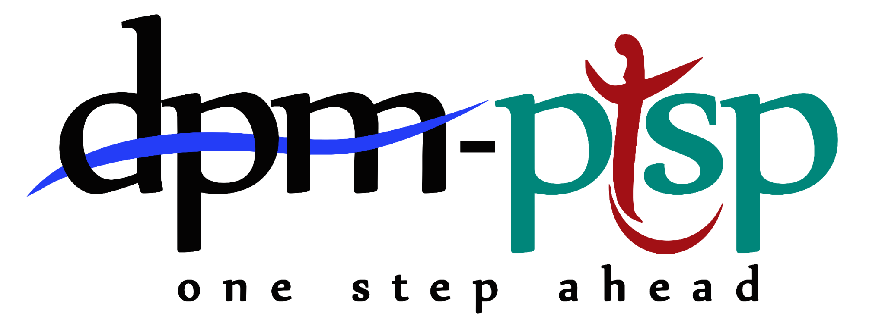

TOTAL PROYEK
—
Jumlah baris data proyek

DPMPTSP Kota Tegal · Ringkasan data OSS berbasis spreadsheet
Jumlah proyek menurut tahun pengajuan proyek.
Akumulasi investasi berdasarkan tahun pengajuan proyek.
Membandingkan konsentrasi proyek antarwilayah.
Jumlah proyek pada setiap kategori risiko.
Distribusi proyek menurut skala usaha.
10 sektor dengan catatan proyek terbanyak.
10 sektor dengan nilai investasi terbesar.
10 judul KBLI teratas berdasarkan jumlah catatan proyek. KPI KBLI unik dihitung dari kode KBLI.
Komposisi PMDN dan kategori status lain yang tercatat.
Pencarian sisi klien pada data yang diterima dari spreadsheet.
| ID Proyek | NIB | Nama Perusahaan | Nama Proyek | KBLI | Judul KBLI | Kecamatan | Risiko | Skala | Investasi |
|---|---|---|---|---|---|---|---|---|---|
| Memuat data… | |||||||||
Ringkasan jenis usaha dari judul KBLI dan nama proyek, misalnya akomodasi, klinik, penyedia makanan, rumah sakit, dan kategori lain yang ditemukan di data.
| Kategori usaha | KBLI | Judul KBLI / Jenis usaha | Jumlah proyek | Total investasi | Kecamatan |
|---|---|---|---|---|---|
| Memuat data… | |||||
Catatan: angka investasi dan TKI merupakan agregasi dari data spreadsheet. Pastikan tidak ada baris duplikat dan definisi kolom sesuai sebelum digunakan sebagai angka resmi. Dashboard ini hanya menampilkan data; pengelolaan data dilakukan melalui spreadsheet.